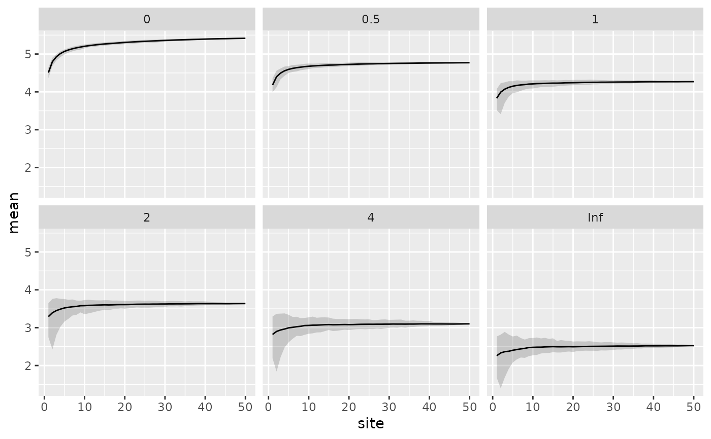

fortify.renyiaccum.RdPrepares a fortified version of results from
vegan::renyiaccum() objects.
an object of class vegan::renyiaccum().
original data set. Currently ignored.
additional arguments passed to other methods. Ignored in this method.
A data frame (tibble) is returned. What is returned depends on how
vegan::renyiaccum() was called.
If raw = FALSE, then a data frame with columns site, scale, mean,
std_dev, min, max, q2.5, and q97.5, containing the accumulated
sites, the Rényi scale, and summary statistics of the
Rényi accumulation curves. An additional column collector
will be present if collector = TRUE was used in the vegan::renyiaccum()
call.
If raw = TRUE, then a data frame with columns site, permutation,
scale, and diversity, containing the site and permutation
identifiers, Rényi scale, and the Rényi
diversity, respectively.
library("vegan")
library("ggplot2")
data(BCI)
pool <- renyiaccum(BCI)
df <- fortify(pool)
df
#> # A tibble: 300 × 8
#> site scale mean std_dev min max q2.5 q97.5
#> <int> <chr> <dbl> <dbl> <dbl> <dbl> <dbl> <dbl>
#> 1 1 0 4.50 0.0753 4.34 4.65 4.36 4.64
#> 2 2 0 4.80 0.0605 4.68 4.93 4.69 4.90
#> 3 3 0 4.93 0.0480 4.82 5.05 4.84 5.01
#> 4 4 0 5.01 0.0376 4.91 5.09 4.94 5.08
#> 5 5 0 5.07 0.0326 4.98 5.14 5.01 5.12
#> 6 6 0 5.11 0.0312 5.02 5.17 5.05 5.16
#> 7 7 0 5.14 0.0304 5.06 5.23 5.08 5.19
#> 8 8 0 5.16 0.0293 5.11 5.26 5.11 5.22
#> 9 9 0 5.18 0.0275 5.13 5.28 5.14 5.23
#> 10 10 0 5.20 0.0270 5.14 5.29 5.16 5.26
#> # ℹ 290 more rows
ggplot(df, aes(x = site, y = mean)) +
geom_ribbon(aes(ymin = q2.5, ymax = q97.5, x = site),
alpha = 0.2, inherit.aes = FALSE) +
geom_line() +
facet_wrap(~ scale)
